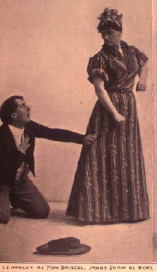
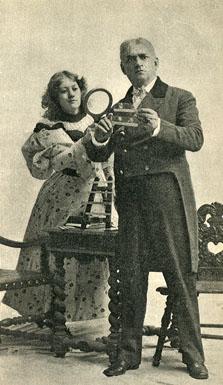
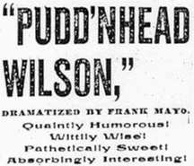

" P U D D ' N H E A D W I L S O N "
A PLAY IN
PROLOGUE AND FOUR ACTS
Dramatized by
Frank Mayo.
From Mark Twain's Book of the same name.
|
|

So reads the titlepage of the only script of Pudd'nhead Wilson that I have found. This typescript was the property of the American Play Company, Inc., of New York City, and is undated, though according to the copyright claim it must have been prepared in or after 1909. Mayo died in 1896, while on tour with the play. There's no way to know how the script may have been revised afterwards, but it's likely that the text you can read here is essentially the version of the play that hundreds of thousands of Americans saw during the 1890s. |
|
|

The script allows us to appreciate the way the play emphasized the "Southern" flavor of the story, from the soundtrack consisting of "Lively Southern music" sung by a "Colored quartette" to the attempt to represent southern accents in the dialogue (the play's first word is "hya'r"). During the Nineties plays with ante bellum southern settings were very popular with audiences around the country. Mayo's representation of that culture is ambiguous. On the one hand, the sympathetic characters often overtly express contempt for how "benighted" the local populace is, and the play treats the selling of slaves "down the river" and the miscegenous conduct of white slave owners more directly that MT's text does. (Mayo makes Roxy's child the son of York Driscoll, which both tightens the dramatis personae and puts the interracial relationship between a male master and his female slave right in front of an audience's eyes.) But at the same time, the institution of slavery is largely idealized: at various points the slaves say things like "God bless you, Marse York." One of Mayo's most striking changes is to make the switching of the "white" and "black" babies happen as a mistake, made by Aunt Patsy. Roxy is the only one who recognizes the error. The stage directions say explicitly that she never thought of making the switch herself, but in her response to the event, which gives the Prologue its curtain lines, something of the novel's depiction of the exchange as her revolt against an unjust system can still be heard -- though only in passing, as it were. Mayo's depiction of the impostors "Tom" and "Chambers" seems mainly calculated to reassure viewers that "blood," like merit, will always eventually tell, that the innate differences between "white" and "black" explain the nobility displayed by "Chambers" and the viciousness of "Tom." But here again, the play is complex and ambiguous. "Chambers" plays a much larger role in the play too, as Rowy's closest friend, surrogate brother, protector -- and at times, almost, suitor. Act 2, Scene 2 includes an ideologically disruptive moment when "Chambers," as a "black slave," defends Rowy from the insults of a "white gentleman," physically assaulting the "white" man in the process. Some southern reviewers objected to the part "Chambers" plays, especially with Rowy, but one New York reviewer declared the play would be stronger if "Chambers"'s "human nature" as someone "by birth white and aristocratic" asserted itself and he "boldly declare[d] his passion for Roxy." In the script both Rowy and "Chambers" angrily reject the idea that their relationship has any romantic content, and they don't come together as hero and heroine of the love story until after Pudd'nhead establishes the changeling's true identities. While the audience knows all along that "Chambers" is really the white Tom, Rowy doesn't. Yet how most viewers reacted to the moments in which the play verges on becoming a love story between a black man and a white woman remains unknown. |
|
|

|
|
|
The archive's text of the play derives from a typescript deposited for copyright sometime after 1913; the typescript itself is in the collection of the New York Public Library for the Performing Arts. Like the typescript, the electronic text displays stage directions in red. The typescript contains a large number of typographical errors, and it looks as though each of the four acts was typed by a different typist. The archive text has been edited both to correct obvious errors and for consistency; substantive changes are explained in footnotes.
| |